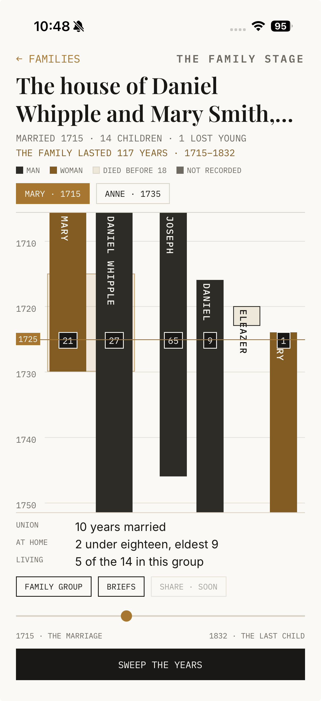
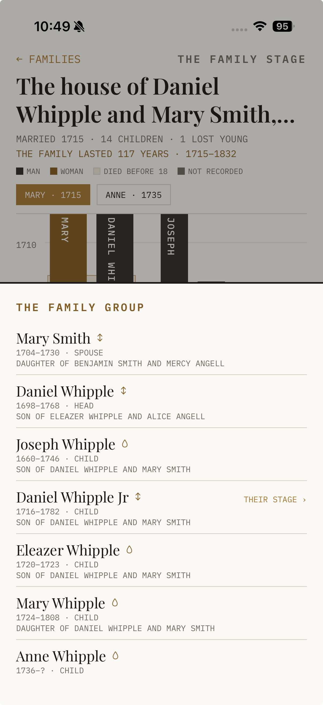

One household — a marriage and its children — drawn as vertical threads against falling time. Each thread is a life; the amber enclosure is the marriage; the reading line lies across them and boxes every age in the household in a single year.
How you get here: Tree tab → the Register (the table of contents of households) → tap a family; or from a person’s register, See this household as a length of time › — offered only when the household can actually be drawn. How you leave: “← FAMILIES” returns to the Register in one tap, however deep you’ve wandered.

1 2 3 4 5 6 7 8The FAMILY GROUP chip lifts a sheet listing every member of the household — name, years, role, lineage mark, and parentage. Tap a person to open their full page; the back arrow returns here. BRIEFS lists any research briefs open on this household’s members.

1 2 3